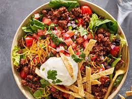

Taco Salad Pizza

Description
When you can't decide between pizza and tacos, make both! Save time by starting with a pre-made frozen CAULIPOWER® crust.
Ingridients
- 1 CAULIPOWER® Three Cheese Pizza
- cooking spray
- ½ pound ground beef
- ½ cup black beans, rinsed and drained
- ⅓ cup water
- ¼ cup salsa
- 2 tablespoons taco seasoning
- ¼ cup shredded pepper Jack cheese
- ¼ cup sour cream
- 1 tablespoon Mexican-style hot sauce
- 1 cup shredded lettuce
- 1 Roma tomato, diced
- 1 jalapeno pepper, sliced (Optional)
- 2 tablespoons chopped fresh cilantro (Optional)
- ¼ cup tortilla strips
Steps
- Preheat the oven to 425 degrees F (220 degrees C).
- Spray a skillet with cooking spray. Cook ground beef on medium-high heat until browned, 5 to 7 minutes. Drain off grease. Add black beans, water, salsa, and taco seasoning and cook for about 2 minutes more.
- Unwrap pizza and place on a baking sheet. Spread meat and bean mixture evenly over the crust. Add pepper Jack cheese.
- Bake in the preheated oven for 10 to 12 minutes.
- While pizza is baking, combine sour cream and hot sauce in a small bowl. Transfer to a small zip-top bag and place in the refrigerator.
- Allow pizza to cool for about 5 minutes, then top with lettuce, tomato, jalapeno, cilantro, and tortilla strips.
- Snip off a corner of the zip-top bag and drizzle the sour cream and hot sauce mixture over the pizza.
- And the last step is to enjoy the meal ;)